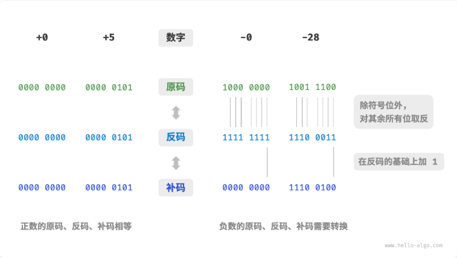
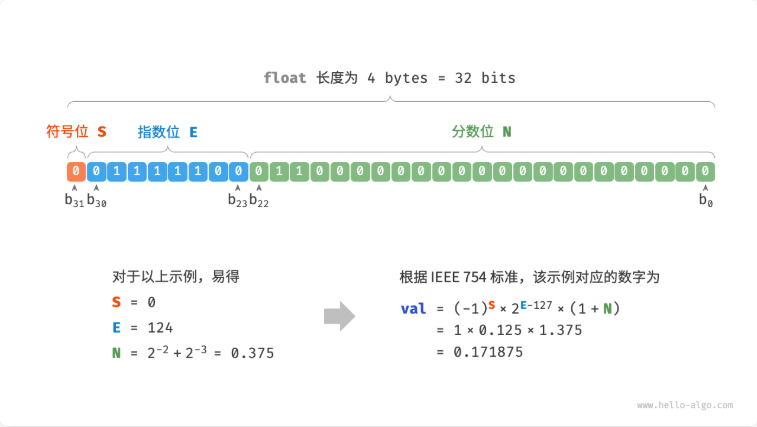

原码、反码和补码
在上一节的表格中我们发现，所有整数类型能够表示的负数都比正数多一个，例如 byte 的取值范围是 \([-128, 127]\) 。这个现象比较反直觉，我们需要先了解原码、反码和补码：
- 原码：我们将数字的二进制表示的最高位视为符号位，其中 0 表示正数， 1 表示负数，其余位表示数字的值。
- 反码：正数的反码与其原码相同，负数的反码是对其原码除符号位外的所有位取反。
- 补码：正数的补码与其原码相同，负数的补码是在其反码的基础上加 1 。

在计算机中，数字是以“补码”的形式存储的，这一点非常重要，但为什么不用原码呢？
原码虽然最直观，但存在一些局限性。一方面，负数的原码不能直接用于运算。例如在原码下计算 \(1 + (-2)\) ，得到的结果是 \(-3\) ，这显然是不对的。
\[ \begin{align} 1 + (-2) &= 0000\,0001 + 1000\,0010 \\ &= 1000\,0011 \\ &= -3 \end{align} \]
为了解决此问题，计算机引入了反码：
\[ \begin{align} 1 + (-2) &= 0000\,0001(原码) + 1000\,0010(原码) \\ &= 0000\,0001(反码) + 1111\,1101(反码) \\ &= 1111\,1110(反码) \\ &= 1000\,0001(原码) \\ &= -1 \end{align} \]
另一方面，数字零的原码有 \(-0\) 和 \(+0\) 两种表示方式。如果是这样，计算机要处理零相关的判断需要同时处理这两个，降低运行效率。为了统一正负零，计算机引入了补码：
\[ \begin{align} -0 &= 1000\,0000(原码) \\ &= 1111\,1111(反码) \\ &= 1\,0000\,0001(补码) \end{align} \]
在负零的反码基础上加 1 会产生进位，但 byte 类型的长度只有 8 位，因此溢出到第 9 位的 1 会被舍弃。因此得到的补码中，正负零都是同一个值了。
然而，补码 \(1000\,0000\) 是一个例外，它并没有对应的原码。根据转换方法，我们得到该补码的原码为 \(0000\,0000\) 。这显然是矛盾的，因为该原码表示数字 \(0\) ，它的补码应该是自身。计算机规定这个特殊的补码 \(1000\,0000\) 代表 \(-128\) 。实际上，\((-1) + (-127)\) 在补码下的计算结果就是 \((-128)\) 。
\[ \begin{align} (-127) + (-1) &= 1111\,1111(原码) + 1000\,0001(原码) \\ &= 1000\,0000(反码) + 1111\,1110(反码) \\ &= 1000\,0001(补码) + 1111\,1111(补码) \\ &= 1000\,0000(补码) \\ &= -128 \end{align} \]
你可能已经发现了，上述所有计算都是加法运算。这暗示着一个重要事实：计算机内部的硬件电路主要是基于加法运算设计的。这是因为加法运算相对于其他运算（比如乘法、除法和减法）来说，硬件实现起来更简单，更容易进行并行化处理，运算速度更快。
通过将加法与一些基本逻辑运算结合，计算机能够实现各种其他的数学运算。例如，计算减法 \(a - b\) 可以转换为计算加法 \(a + (-b)\) ；计算乘法和除法可以转换为计算多次加法或减法。
浮点数编码

我们这里所说的浮点数以 float 为准，double 是同理的
float 相较于 int 而言，两者都是 32 位的长度，但是 float 表示的值范围要大得多，但副作用是牺牲了精度：由于指数位的存在，浮点数 float 的数值越大，相邻两个数字之间的差值就会趋向越大。